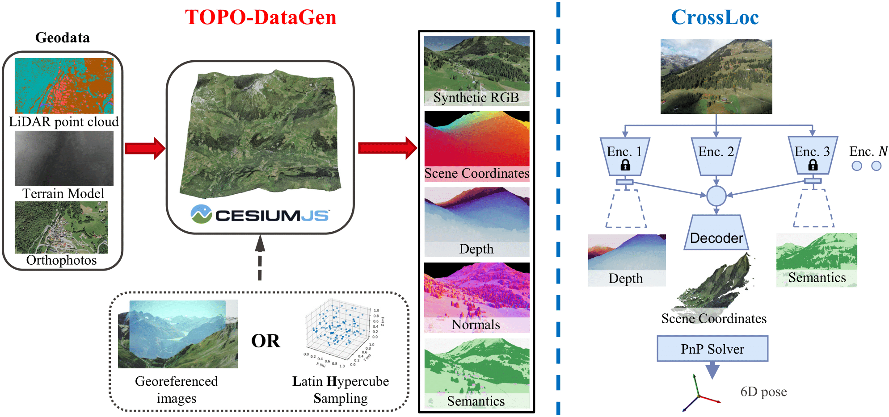

Summary
We present a visual localization system that learns to estimate camera poses in the real world with the help of synthetic data .

Our main contributions are threefold:
Left. The proposed TOPO-DataGen workflow generates multimodal synthetic datasets over large scales using off-the-shelf geodata. Right. We present CrossLoc, a cross-modal visual representation learning method for absolute localization. It learns to predict scene coordinates via self-supervised geometric tasks and external labels such as semantics if available.
1) TOPO-DataGen: an open-source multimodal synthetic data generation tool tailored to aerial scenes.
It takes common geo-data as inputs and outputs diverse synthetic visual data such as 2D image-3D geometry-semantics-camera pose. The rendering engine is developed upon CesiumJS. See our TOPO-DataGen code for details and feel free to try the demo to generate synthetic data in Genève.
2) CrossLoc localization: a cross-modal visual representation learning method via self-supervision for absolute localization.
The CrossLoc learns to localize the query image by predicting its scene coordinates using a set of cross-modal encoders, followed by camera pose estimation using a PnP solver. Similar to self-supervised learning, it leverages data structure to create additional supervisory signals to enhance learning. Specifically, it makes use of the coordinate-depth-normal geometric hierarchy for self-supervision: from the 3D scene coordinate labels, one could compute accurate 6D camera pose and subsequently compute the depth and surface normals without any external labels. We argue that the tasks of coordinate-depth-normal regression are geometrically highly related. The aggregated cross-modal representations could be used to enhance the final task of coordinate regression.
See our CrossLoc localization code for training code, pretrained models, and baseline implementations.
3) CrossLoc Benchmark Datasets: large-scale benchmark datasets for sim-to-real visual localization, including synthetic and real images with 3D and semantic labels on urban and natural sites.
50k+
Synthetic Images
7k+
Real Images
270
Hectares
6+
Modalities
(Note: quality may be compromised due to GIF compression)

All 7k+ real images are accurately geo-referenced using a professional drone, numerous ground control points, and a GNSS base.
All real images have matching synthetic RGB images with a validated positioning accuracy at cm-level.
Most generated 3D labels have a reprojection error of no more than 2 pixels.
All synthetic data is created using the fully open-sourced geo-data from the Swiss government swisstopo. The semantic maps are also generated.
Carefully calibrated camera intrinsic parameters and the 6D camera poses are provided.